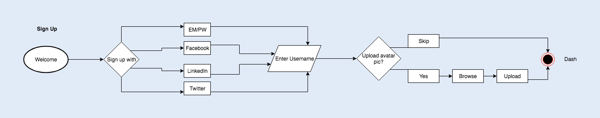
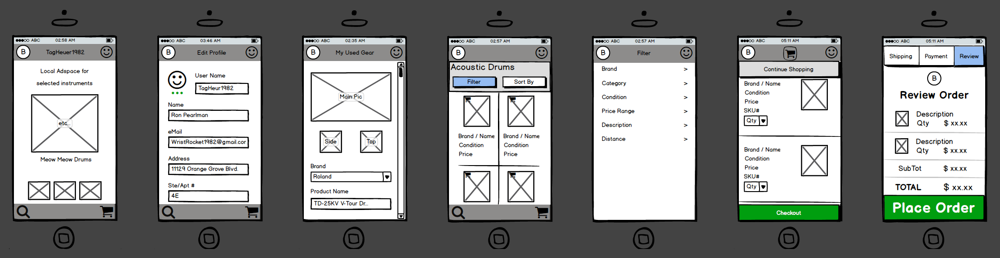
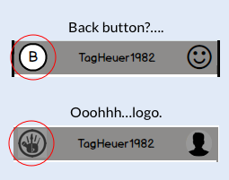
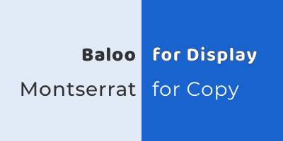
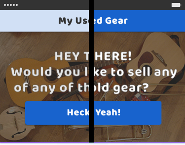
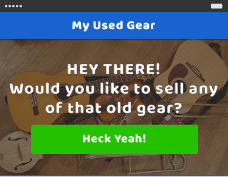
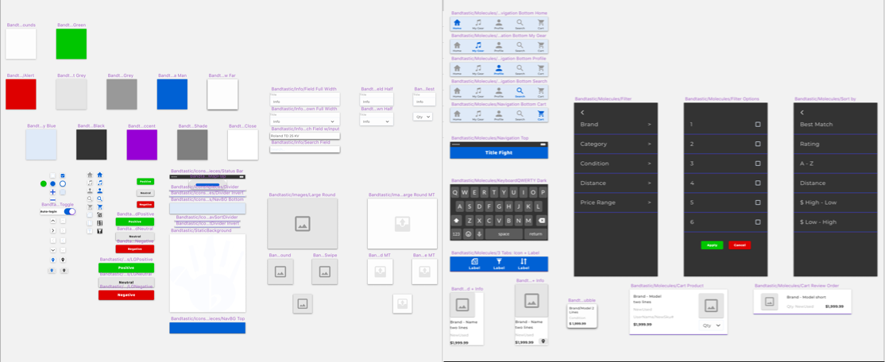

Bandtastic was my first project for Bloc.io. I was at my most disheveled, but I sure learned from the experience. I wasn't aware of how much I needed to document discoveries or maintain deliverables at this point, & I was really wrapped up in observing the role of different deliverables & how they worked together. It took about 6 months to go from the discovery phase to a full MVP prototype.
Bandtastic combines the e-commerce aspect of Craigslist & eBay, with the social media aspect of Myspace & Band Mix. I assumed the roles of Researcher, Strategist, Information Architect, & Visual Designer. I used Sketch, Balsamiq for lo-fi wires, Draw.io for flows, a handful of tools Google offers, & UserTesting.com provided videos of people testing the prototype.
I needed to connect musicians locally who want to buy or sell used instruments.
A used instrument bazaar that includes used inventory from smaller stores such as Chicago’s Make’N Music.

After conducting some research through survey, I found that people were mostly interested in buying/selling gear, & music lessons. A lower score meant a higher priority. The minimum viable product focused on adding your own gear to the market, searching, & the checkout process.
SWOT Analysis
- Nice landing page & hero
- Clean browsing & search page
- Well organized forum with a search function
- I dislike the tomato/orange color scheme
- Account types very similar to Bandtastic
STRENGTHS
WEAKNESSES
THREATS
- Very organized for so much text
- About as good a use of whitespace as they can manage
- Because there are SO many things to categorize & it's done in such a tight space, it seems inescapably cluttered
- The look can be described as "cheap". Perhaps it’s light to favor quick loading times on mobile
- The use of dropdown menus could help the clutter
STRENGTHS
WEAKNESSES
OPPORTUNITIES
- Clean browsing & search function
- Potential scams
- Cluttered landing page
STRENGTHS
WEAKNESSES
- NAV UI tucked away on the side
- Sleek music player tucked on the bottom
- VERY categorized people search
- The news tiles on the landing page are just...endless, & seem randomly arranged
- The Sign In/Up, & Search function whiting out the whole page is jarring
- The album search can't combine "new releases/high rotation" with the genre choice
STRENGTHS
WEAKNESSES
- I can scroll through the landing page very quickly & parse information properly. It's very clean & organized
- Navigation is very simple & quick
- Search has categories & subcategories
- Obvious hero
- Colors of buttons leave them easy to spot
- Excellent use of whitespace to separate product/info
STRENGTHS
Craigslist is very plain & is basically a want ad. Their map seems like an afterthought. eBay has the used sales portion down, but it’s not targeting musicians. MySpace is basically musical advertising now, & BandMix is social media for musicians that want to become band members. Each also had aesthetic strengths I could pull from. All were well organized except MySpace, they all used white space well, & all but Craigslist had buttons that were easy to spot.
In order to get ready for wireframing, I started with some user stories, & then translated them into user flows. They really helped me project a pathway for the app.
Here are some Balsamiq wireframes of different sections in the app:
One mistake I made is that I glazed over the placeholders for my logo & user avatar in the top navigation. I used a B in a circle for the Bandtastic logo & a smiley face where the user avatar would go. I was thinking about information architecture & didn't think it would be mistaken for a back button.
I was pretty surprised when it confused people. Multiple people thought the B was supposed to be a back button, as it was on the top/left corner of the screen where a back button conventionally goes. I remember watching my users struggle & putting my hands on my head. It was the first time I caught a mistake through user testing.
I whipped up a logo to put in place of the B. I wanted something inviting & musical, so I decided on a hand with instrument fingers, & a b-flat in the center of the palm. I meant to revisit the idea to clean it up but never got a chance.
One of the things I did for inspiration was to gather clips of other e-commerce sites on a moodboard. It helped to see other apps use of color contrast & hierarchy.

I used style tiles to see how colors & text would look paired up. At this point, I was really just getting into typography, so I was looking for some way to choose one font over another since a handful seemed potentially appropriate. I ended up staring at different combinations for quite some time. Typography was a very subjective decision. It took quite some time, & in the end was based on feel, readability, & the display font had to contrast the main one.

I wanted something simple, friendly, inviting & trustworthy. With some inspiration from Mega Man, I chose a blue scheme.
Mega Man #1863CD
Baby Blue #D1E0F5
Med Black #333333
Med Grey #999999
Light Grey #e5e5e5
Now people were missing giant buttons because my “affirmative” button color didn't have the baby blue to contrast against.
I just happened to be learning to trade FOREX through BabyPips.com at the time, & that site is monochromatic green. A round of testing let me know that green buttons stood out again.
Here are some major iteration comparisons:
Dash Search

Search Results

Search Map

Cart

I also learned about Atomic Design & made a little system. It definitely helped when adding or editing multiple elements.
There were a few things that I’d do differently given the time allotted & experience. I would’ve hand sketched more rough drafts before going into Balsamiq. I think I’ll use Sketch for wireframes next time instead of Balsamiq, or at least, not Balsamiq. The actual visual style of Balsamiq seems like it might be distracting. Now that I not only know but have experienced the purpose of wireframes, I’d prefer something that looks more plain.
The logo was done in a quite a hurry. I would have done a bit more smoothing out, & played with the palm being flat facing up, in a more inviting position.
I think the most important things I got out of this project were experiencing the testing process & experiencing each of these phases feed into the next.